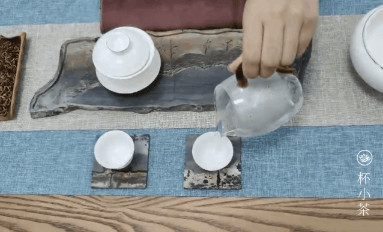
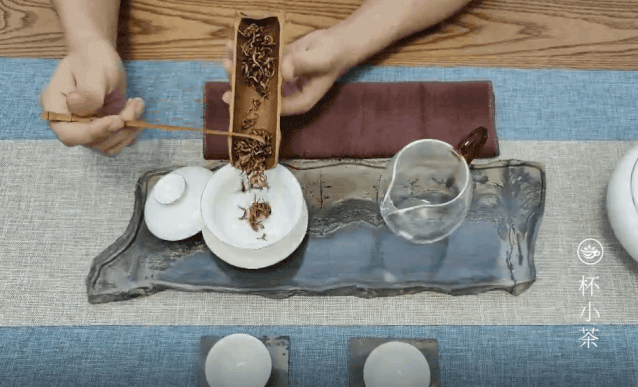
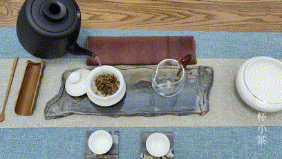
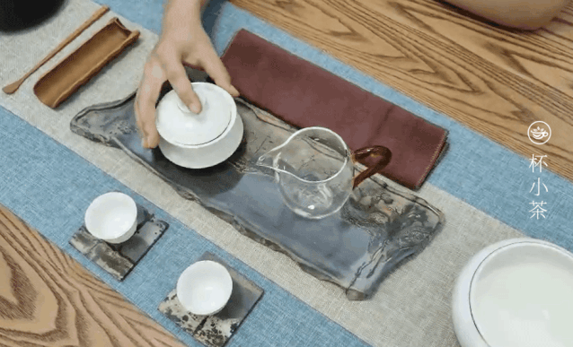
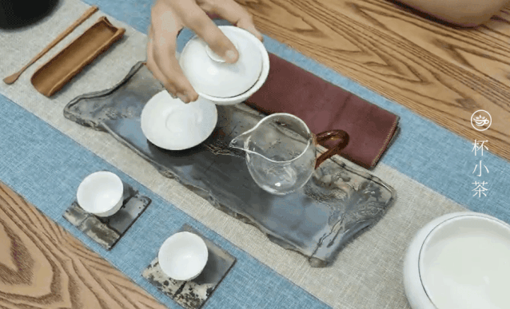
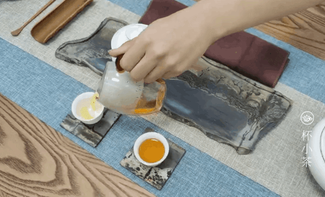
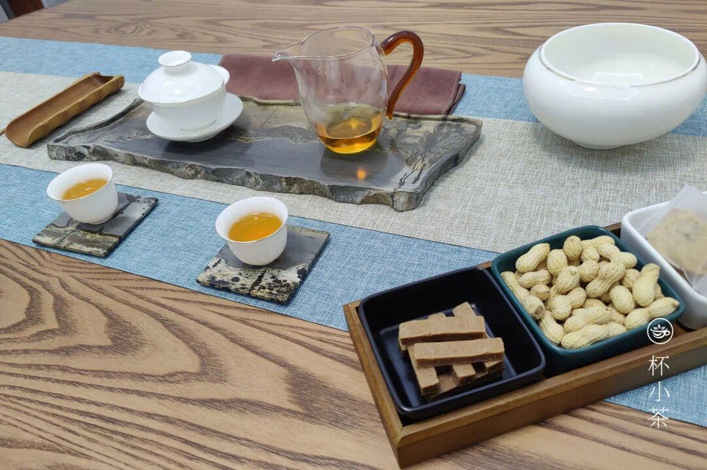

第一步骤

根据品饮人数准备好茶杯碗以及茶叶罐，茶则，茶匙，赏茶盘，茶巾以及烧水壶。
- 
用沸水冲淋所有茶具，随后即将茶壶、茶杯沥干，温具的目的是提高茶具温度，使茶叶冲泡后温度相对稳定，同时还起到清洁的作用。
- 
置茶就是放茶叶，往泡茶的壶里置入一定数量的茶叶，茶叶的数量随不同茶叶而不同的，还有随个人喜好而放。
- 
水温85-90℃，冲泡时将水壶放低，以螺旋的方式轻缓注水，使茶与水更好更快地融合。冲泡过程，要求水壶高悬，使水流有冲击力，并有曲线的美感。
- 
观察茶叶有略微泡开，3秒左右出汤到公道杯，出汤前，适当倾斜出缝隙，手指只抓盖碗的边缘，轻扣盖钮，三点一线地拿稳盖碗。
- 
将茶水从泡茶具中倒出至公道杯
- 
。倒茶时不能一次倒满一杯，至七分满处为好。用茶壶轮流给几杯同时倒茶，当将要倒完时，把剩下的茶汤分别点入各杯中，俗称“韩信点兵”。
- 
一般是先闻香，再观色、啜饮。饮一小口，让茶汤在嘴内回荡，与味蕾充分接触，然后徐徐咽下，并用舌尖抵住齿根并吸气，回味茶的甘甜。
<
>
备具